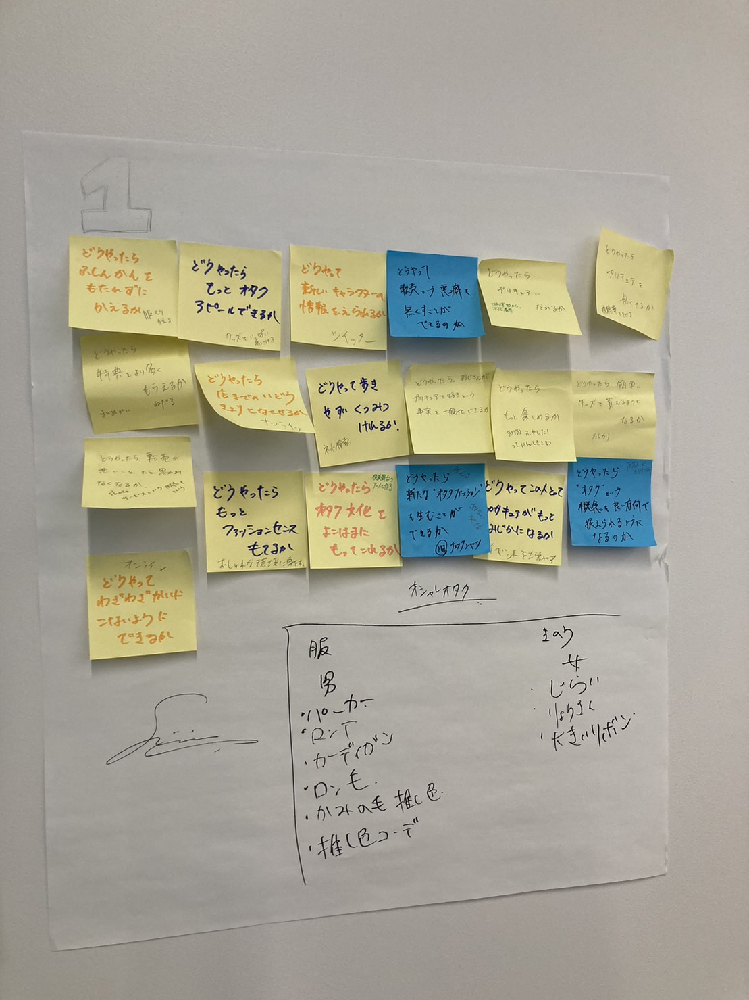
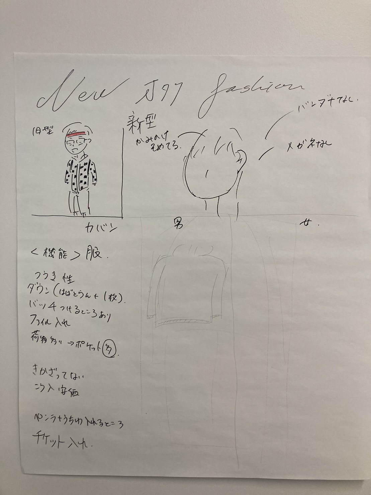
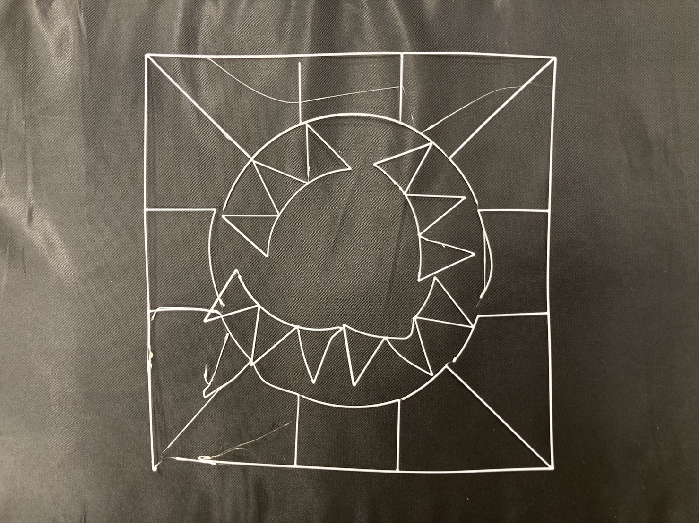
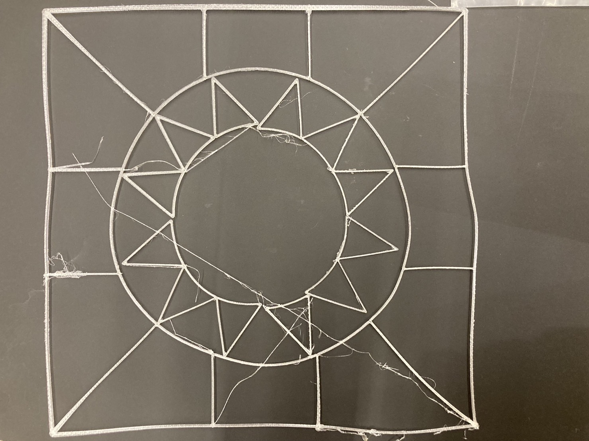
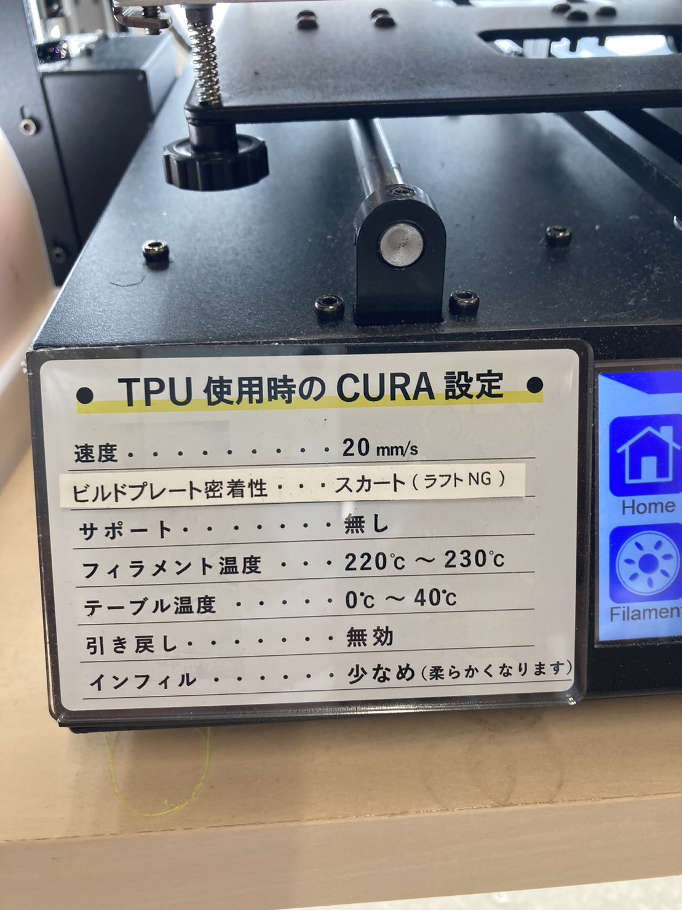

Design for others
~人のためになるモノを作ろう~
【私たちが気になった日常の不思議】
班の中でバイトをしている時にいわゆる「the OTAKU」という人がきて買い物をした人がいたそうだ。その人がプリキュアのファイルを手に持って帰っていったそうだ。班のみんなでなんでその人はプリキュアのファイルが必要だったのか、なぜ隠さずに持って帰ったのかということからより派生して色々な案を出した。

どうやったらもっとオタクアピールができるか、どうやったら新たなオタクファッションを生むことができるか、などという、オタクを新たに全面に出していくにはどのようにするべきかという案がたくさん上がった。
結果：オタクは持ち物が多くポケットが必要
アイディア
今のオタクの服装を考えてみたり、調べたりしたところ意味があった。
服
ボタンの服は脱ぎ着しやすいから
チェックの服は安いから
バンダナ
汗が垂れるのを止めるため
このような分析から私たちも意味がある服を作ろうと考えた。最近はペンライトのサイズが大きくなったり、缶バッジを大量につけることが主流だということがわかったため、それをアピールしながら装着できるものにした

【完成した作品】

布にアタッチするために0.5mmに設定し、線を全て二重にしたことで柔軟性を持たせようとしたが、細すぎたためかパーツがバラバラになってしまった。

柔軟性を持たせようと思って素材をTPUに変更して行った。一回目は設定を変更していなかったためぐちゃぐちゃになって出力された。2回目は設定を変えてがパーツが外れることに変化はなかった。
[使用機械・素材]
3Dプリンター
TPU
レザージャケット